Toca el trabajo. "Sigue" es el que te toca primero. Los grises esperan a otro compañero.
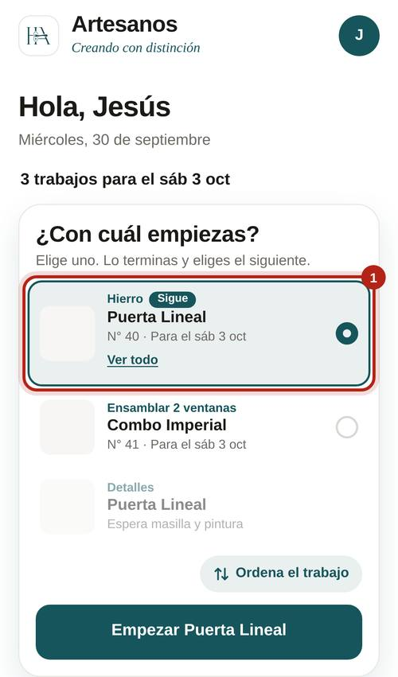
Solo puedes tener uno a la vez.
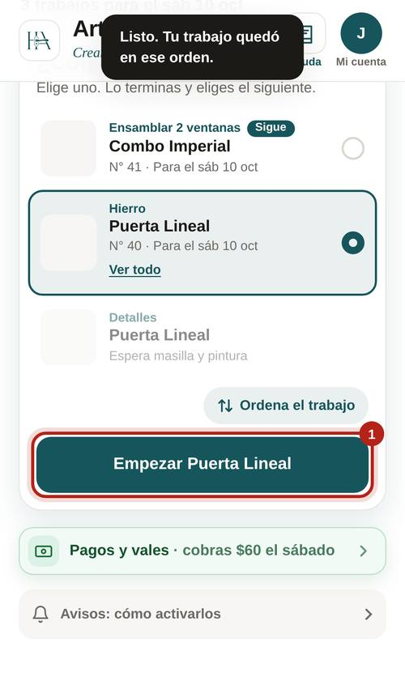
Toca la foto: ves el modelo, el color, las medidas, hacia dónde abre y las notas.
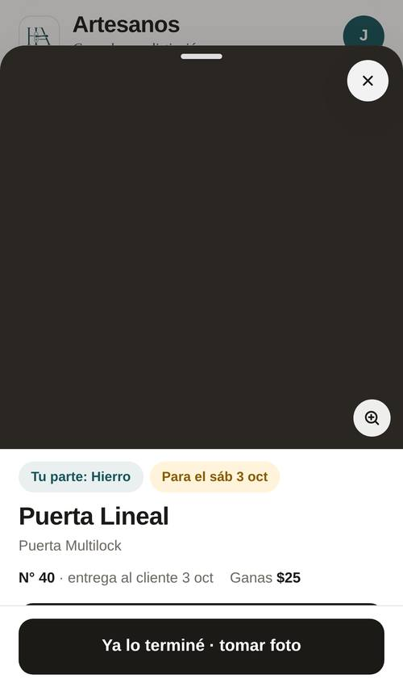
En un combo: "La puerta" y "Las protecciones" para hierro y masilla y pintura; "La puerta" y "Las ventanas" para aluminio, instalar y detalles. Cada cuadro con lo suyo. Es un solo trabajo, una sola foto y un solo pago.
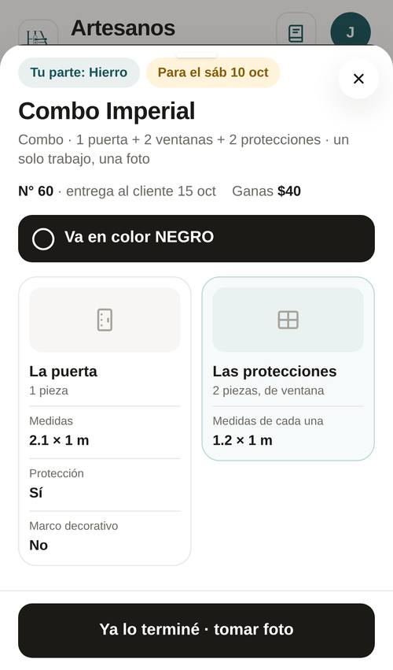
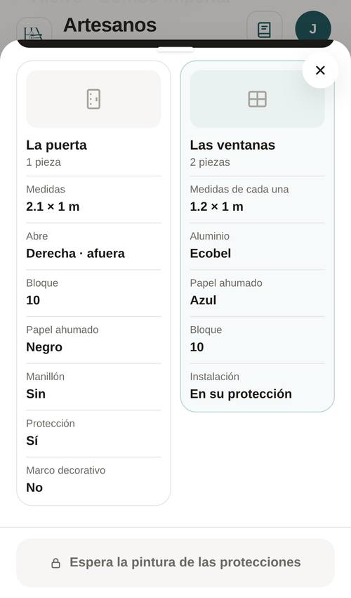
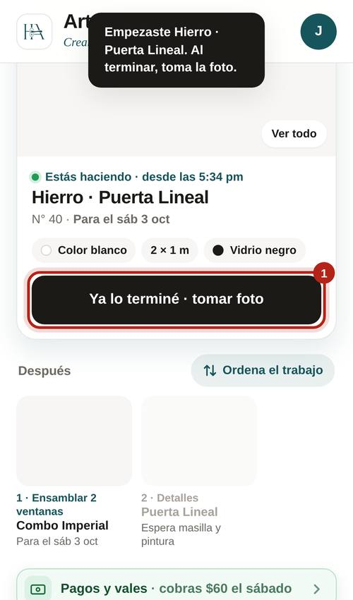
La foto es obligatoria. Que se vea bien el trabajo completo. El botón te dice cuánto suma.
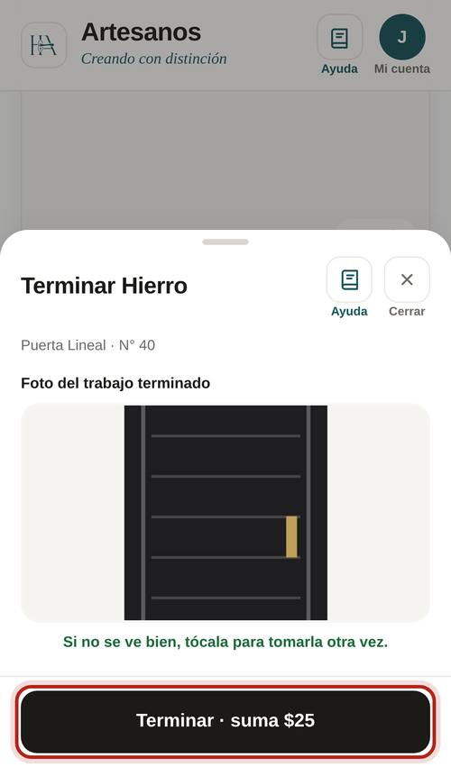
Si te equivocas, "Empezar de nuevo". Luego "Guardar orden".
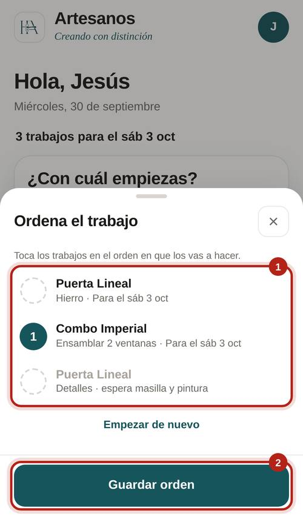
Cada trabajo terminado con su monto. "Por definir" es que falta su precio: Ray lo completa.
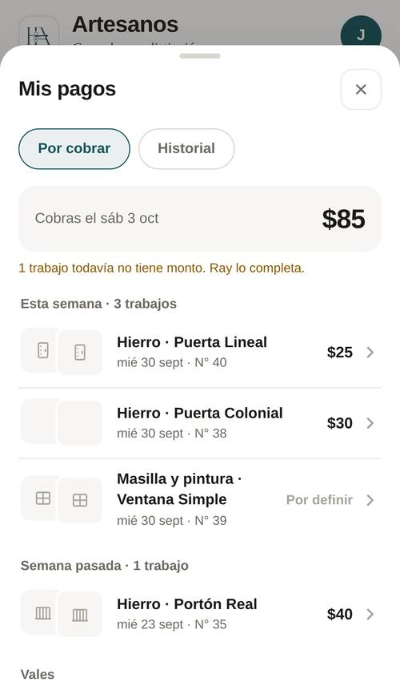
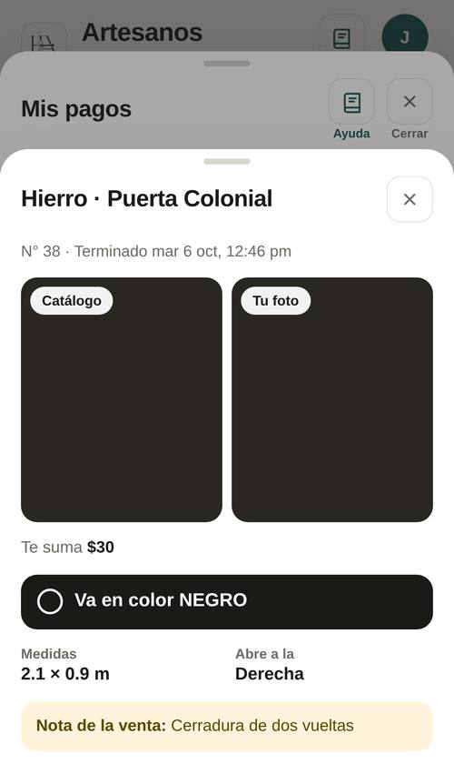
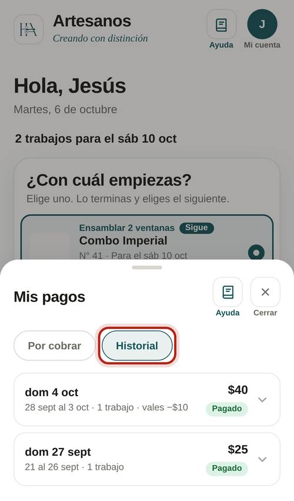
Monto y para qué. Ray lo aprueba y se descuenta de tu próximo pago.
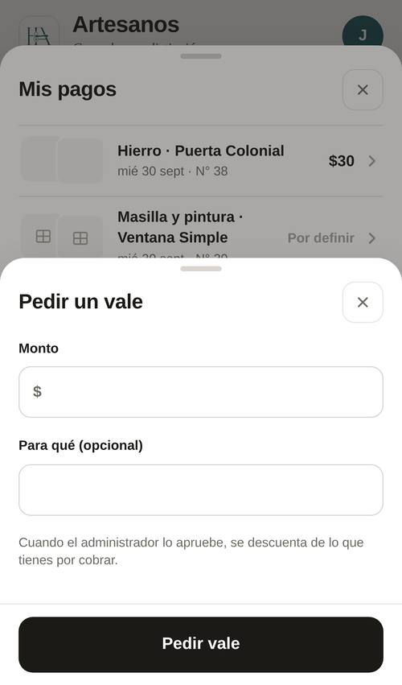
Qué es y para qué sábado. Si depende de un compañero, te llega "Ya te toca" cuando él termine.
Tu compañero terminó lo de antes.
Ahora es para otro sábado.
Se lo pasaron a otro.
Se canceló el pedido o la orden de exhibición.
Lo de tu dinero.